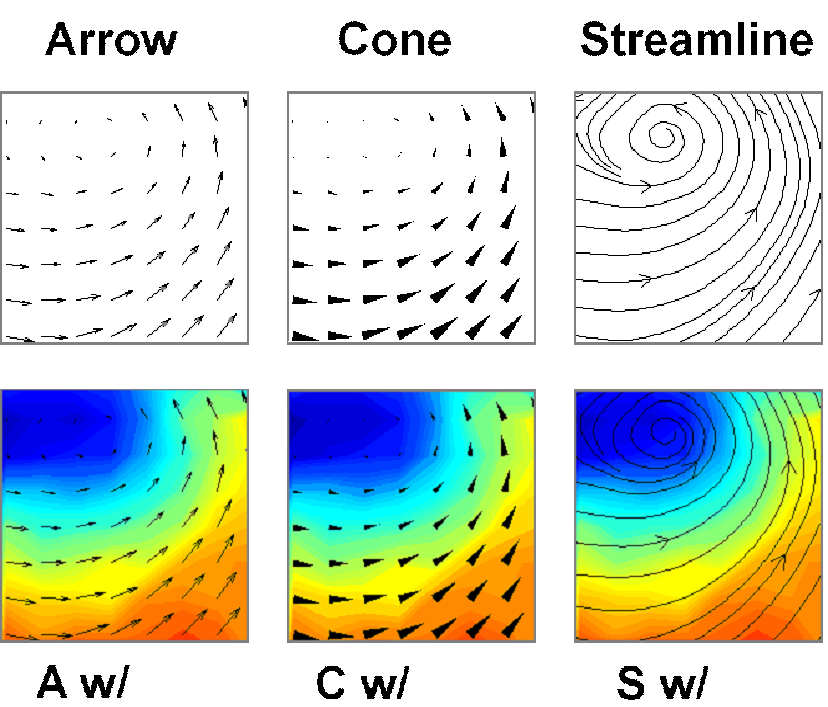
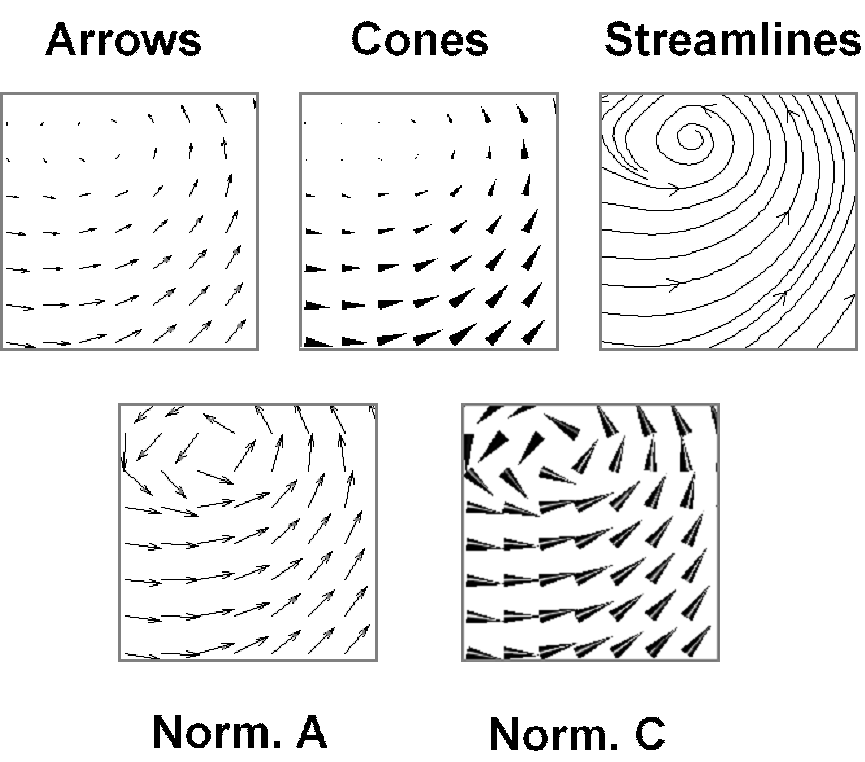
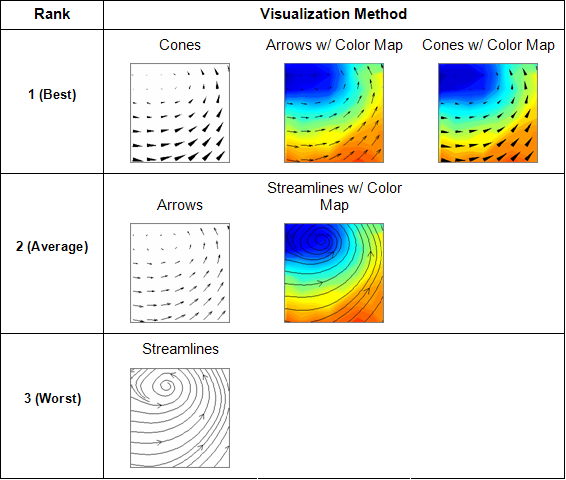
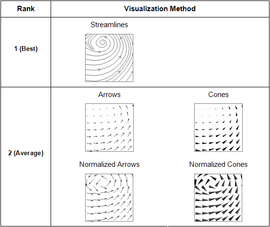

Projects -> A usability study of wind visualization techniques, MS thesis
A usability study of wind visualization techniques
quantitative usability testing statistical experiment usability of visualizations
Time: 2007
Overview: Lack of empirical user studies has been identified as one of the major problems within the field of scientific visualization. My thesis aims to address this problem by contributing empirical evidence of the effectiveness of several commonly used visualization methods for 2-dimensional wind data. I gathered responses from 12 users through a lab usability study and performed statistical analyses. The analyses revealed the best visualization for displaying wind data.
Research Questions & Tasks
| Part 1 | Part 2 |
|---|---|
| Question 1 Which visualization is best for representing wind speed? | Question 2 Which visualization is best for representing wind direction? |
| Task 1 Task 1 Users were asked to indicate where in a visual they believed to be the highest wind speed. | Task 2 Users were asked to indicate what kind of wind direction pattern they saw in a visual. |
|  |  |
Experiment Procedure The experiments were conducted with one user at a time. Each user went through training with each type of visualization method before they embarked on the tasks. After completing the tasks, I interviewed them for their subjective opinions on the ease of use of each type of visualization methods.
The flow of each testing session is shown in the figure below.
Analyses I used ANOVA and pair-wise t test on both objective (user performance) and subjective data (users’ opinions) to identify the most effective visualizations for the tasks tested.
Results The most effective visualization methods for wind speed were Cones, Cones w/ Colormap, and Arrows w/ Colormap. The most effect methods for wind direction was Streamlines.
| Speed | Direction |
|---|---|
|  |  |